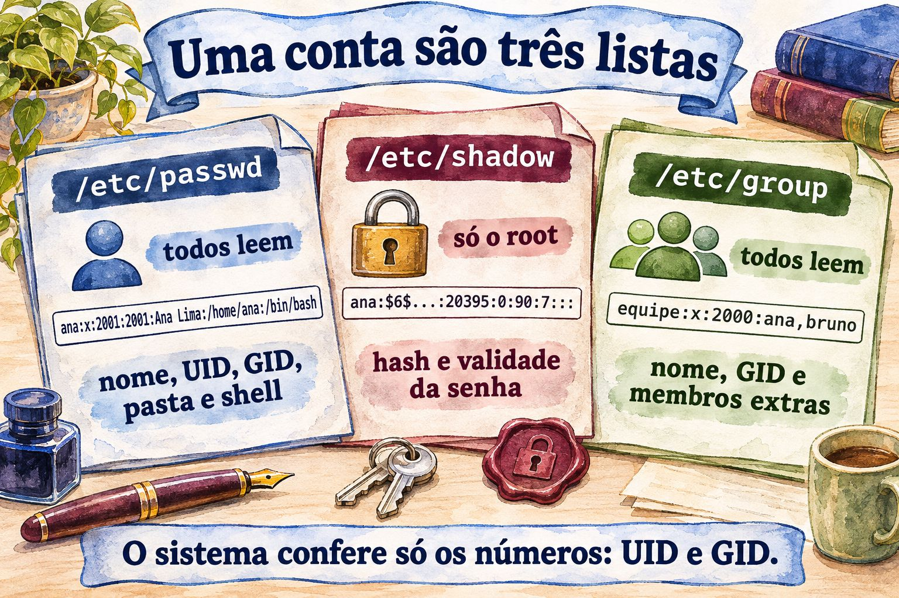
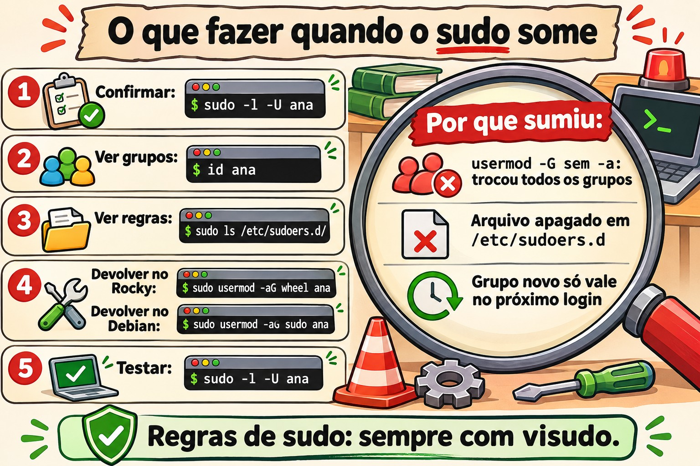

Aula 2.6 · Usuários e grupos
Sexta aula do Módulo 2. Criar um usuário leva um comando. O trabalho de verdade está no resto do ciclo: o estagiário que entra na segunda, a colega que muda de setor e precisa de outro grupo, o terceirizado com prazo para sair, o funcionário que foi desligado às 17h e não pode mais entrar às 17h05. Cada etapa tem um jeito certo e um jeito que parece certo. O usermod -G sem o -a tira a pessoa de todos os outros grupos sem avisar. O useradd do Debian cria a conta sem pasta pessoal. O passwd -l bloqueia a senha, mas a chave SSH continua entrando. E o userdel sem cuidado deixa arquivos que o próximo usuário criado herda. Hoje você faz o ciclo inteiro nas duas VMs, com os mesmos números nas duas, e cria a partir da rocky-lab os usuários da debian-lab, usando a chave e o apelido deb da Aula 2.5.
| Ficha | Aula 2.6 |
|---|---|
| Módulo | M2 · Sistema, usuários e permissões, aula 6 de 8 |
| Quando | Semana 5 |
| Ao final você consegue | Ler /etc/passwd, /etc/shadow e /etc/group campo a campo; saber de onde vêm os padrões de uma conta nova (useradd -D, /etc/login.defs, /etc/skel); criar usuários e grupos com UID e GID escolhidos, iguais em vários servidores; pôr e tirar pessoas de grupos sem apagar os outros; forçar troca de senha e definir validade de senha e de conta; bloquear uma conta de verdade, inclusive para chave SSH; apagar uma conta sem deixar arquivos órfãos; seguir um roteiro quando um usuário não consegue entrar |
| Pré-requisitos | Aula 2.5 (tipos de conta pelo UID; sudo; a chave da rocky-lab instalada na debian-lab e o apelido deb); Aula 1.4 (dono e permissões lidos com ls -l) |
| Tempo | Cerca de 2h30 |
| Snapshots | m2a6-inicio e m2a6-fim nas duas VMs |
1 · Aquecimento
Três perguntas, de cabeça. Escreva as respostas; o Gabarito confere no fim.
- Você roda
usermod -G financeiro anapara pôr a Ana no grupo financeiro. Palpite: ela continua nos grupos em que já estava? - Um funcionário foi desligado. Você roda
passwd -l joao, que bloqueia a senha dele. Palpite: se ele tiver uma chave SSH instalada, ainda entra? - Você apaga o usuário
tempcomuserdel tempe, uma semana depois, cria o usuáriocarla. Palpite: pode acontecer de a Carla virar dona dos arquivos que eram dotemp?
2 · Por que importa
Contas são a primeira coisa que uma auditoria olha, e a primeira que um invasor procura. Os achados se repetem em quase todo servidor com alguns anos de vida: contas de gente que saiu há meses, ainda ativas; um usuário de serviço com shell /bin/bash e senha; o grupo wheel com nove pessoas quando três precisavam; arquivos sem dono em /srv porque alguém apagou a conta sem olhar o que ela tinha.
O ciclo de vida de uma conta tem quatro momentos, e cada um tem um erro clássico:
| Momento | O que a empresa pede | O erro clássico |
|---|---|---|
| Entrada | "O Bruno começa segunda, mesmo acesso da Ana" | Copiar a linha do /etc/passwd à mão, ou esquecer a pasta pessoal |
| Mudança | "A Ana passou para o financeiro" | usermod -G sem -a: ela sai de todos os outros grupos, inclusive o do sudo |
| Prazo | "O terceirizado fica até 31 de dezembro" | Anotar num papel e esquecer. O certo é a conta expirar sozinha |
| Saída | "O João foi desligado, corta tudo agora" | passwd -l e pronto. A chave SSH dele continua entrando |
E há o problema que só aparece quando você tem mais de um servidor: o mesmo usuário com números diferentes em cada um. A Ana é UID 1001 num servidor e 1003 no outro. Quando um disco ou uma pasta de rede passa de um para o outro, os arquivos dela aparecem como de outra pessoa. O sistema guarda o número, não o nome.
3 · Modelo mental
Uma conta é uma linha em três arquivos de texto. O nome é para você; o sistema guarda e confere só os números. Todo comando desta aula é um jeito seguro de editar essas linhas.
/etc/passwd (todos leem) ana:x:2001:2001:Ana Lima:/home/ana:/bin/bash
│ │ │ │ │ │
│ UID GID descrição pasta shell
└─ a senha não está aqui: "x" = veja o shadow
/etc/shadow (só o root lê) ana:$6$...:20395:0:90:7:::
│ │ │ │ │
hash última mín máx aviso (+ inativa, expira)
troca
/etc/group (todos leem) equipe:x:2000:ana,bruno
│ │ │
nome GID membros extras (o grupo principal não aparece aqui)
/etc/skel/ modelo copiado para a pasta pessoal de cada conta nova
/etc/login.defs padrões: faixa de UID, validade de senha, criar pastaQuatro ideias carregam a aula:
| Ideia | O que quer dizer | Consequência |
|---|---|---|
| O sistema guarda números | Arquivos, processos e permissões guardam UID e GID, não nomes | Apagar uma conta não apaga os arquivos dela; o próximo usuário com o mesmo número herda tudo |
| Grupo principal e grupos extras | O principal está no 4º campo do /etc/passwd; os extras, no 4º campo do /etc/group | usermod -G troca a lista inteira de extras; -aG acrescenta |
| Senha e conta são coisas diferentes | A senha pode estar bloqueada com a conta ativa, e a conta pode expirar com a senha válida | Para cortar o acesso de verdade, expire a conta; bloquear a senha não para a chave SSH |
| Os grupos valem no login | O processo recebe a lista de grupos quando a sessão começa | Quem foi posto num grupo só ganha o acesso numa sessão nova |


4 · Conceito em camadas
Essencial
Ler as três listas. Use getent em vez de abrir o arquivo: ele mostra a mesma linha, e funciona também quando as contas vêm de um diretório central, como o Active Directory, assunto de um módulo mais adiante.
getent passwd rodrigo
getent group rodrigo
sudo getent shadow rodrigo | cut -d: -f1,3- # sem o hash
id rodrigorodrigo:x:1000:1000:Rodrigo:/home/rodrigo:/bin/bash
rodrigo:x:1000:
rodrigo:20380:0:99999:7:::
uid=1000(rodrigo) gid=1000(rodrigo) groups=1000(rodrigo),10(wheel)O cut tira o segundo campo, o hash da senha. Ele não é a senha, mas não há motivo para deixá-lo na tela, no histórico do terminal ou num chamado. Os campos do /etc/shadow:
| Campo | Exemplo | Quer dizer |
|---|---|---|
| 1 · nome | rodrigo | A conta |
| 2 · hash | $6$... ou $y$... | A senha embaralhada. ! ou !! no começo = senha bloqueada; * = nunca teve senha |
| 3 · última troca | 20380 | Dias desde 1º de janeiro de 1970. 0 = trocar no próximo login |
| 4 · mínimo | 0 | Dias que precisa esperar para trocar de novo |
| 5 · máximo | 99999 | Dias até a senha vencer. 99999 = nunca, na prática |
| 6 · aviso | 7 | Dias de aviso antes de vencer |
| 7 · inativa | vazio | Dias depois de vencer em que ainda dá para entrar e trocar |
| 8 · expira | vazio | Data em que a conta expira, em dias desde 1970 |
Ninguém lê esses números de cabeça. O chage -l traduz:
sudo chage -l rodrigoCriar um usuário e um grupo. O mesmo comando funciona igual no Rocky e no Debian quando você não confia nos padrões:
sudo groupadd -g 2000 equipe
sudo useradd -u 2001 -c "Ana Lima" -m -s /bin/bash ana
sudo passwd ana| Opção | Faz |
|---|---|
-u 2001 | Escolhe o UID. Sem ela, o useradd pega o maior UID em uso + 1 |
-c "Ana Lima" | A descrição, o nome completo |
-m | Cria a pasta pessoal, copiando o /etc/skel |
-s /bin/bash | O shell |
-g grupo | O grupo principal. Sem ela, cria um grupo com o mesmo nome da conta |
-G a,b | Os grupos extras já na criação |
O passwd ana pede a senha nova duas vezes. Como root, ele não pergunta a senha antiga.
Pôr e tirar de grupos.
sudo usermod -aG equipe ana # acrescenta. O -a é o que importa
sudo gpasswd -a bruno equipe # o mesmo, de outro jeito
sudo gpasswd -d bruno equipe # tira de um grupo só
getent group equipeApagar.
sudo userdel -r ana # apaga a conta, a pasta pessoal e a caixa de correio local
sudo groupdel equipeIntermediário
De onde vêm os padrões. Uma conta nova nasce de três lugares:
| Lugar | O que define | Ver com |
|---|---|---|
/etc/login.defs | Faixa de UID e GID de pessoas e de sistema; validade de senha padrão; se cria a pasta pessoal; permissão da pasta; grupo com o nome da conta | grep -v -E '^#|^$' /etc/login.defs |
/etc/default/useradd | Shell padrão, pasta base, /etc/skel, conta inativa | useradd -D |
/etc/skel/ | Os arquivos que vão para a pasta pessoal nova | ls -la /etc/skel |
Mudar qualquer um deles só vale para contas criadas depois. Pôr PASS_MAX_DAYS 90 no login.defs não muda a validade de ninguém que já existe; para esses, é chage.
useradd × adduser. No Rocky, adduser é só outro nome para o useradd. No Debian, adduser é outro programa: interativo, cria a pasta, pede senha e nome, e usa padrões próprios, do /etc/adduser.conf. Em scripts e em tarefas exatas, use useradd com as opções explícitas: o comando é o mesmo nas duas famílias e faz exatamente o que está escrito.
Validade de senha e de conta.
sudo chage -d 0 ana # trocar a senha no próximo login
sudo chage -M 90 -m 1 -W 7 ana # vence em 90 dias, espera 1 para trocar, avisa 7 antes
sudo chage -E 2026-12-31 bruno # a CONTA expira nessa data
sudo chage -E -1 bruno # tira a data de expiração
sudo chage -l brunoO passwd -e ana faz o mesmo que chage -d 0. A diferença entre senha vencida e conta expirada é a que mais confunde:
Senha vencida (-M, -d 0) | Conta expirada (-E) | |
|---|---|---|
| O que acontece no login | Entra, mas é obrigado a trocar a senha antes | Não entra, nem com senha, nem com chave |
| Mensagem | You are required to change your password immediately | Your account has expired; please contact your system administrator |
| Para quê | Política de senha, senha inicial | Terceirizado com prazo, desligamento |
Bloquear × expirar × tirar o shell. Três travas, cada uma fecha uma porta:
| Comando | Fecha | Não fecha |
|---|---|---|
usermod -L ou passwd -l | Login com senha | Chave SSH, su feito pelo root, processos que já estão rodando |
usermod -e 1 ou chage -E 0 | Todo login que passa pelo PAM, com senha ou chave | Processos que já estão rodando |
usermod -s /sbin/nologin | Shell interativo | Transferência de arquivos por SFTP, se configurada sem shell; processos rodando |
Para cortar uma pessoa de verdade: expirar a conta, bloquear a senha, e encerrar o que estiver rodando com loginctl terminate-user nome ou pkill -u nome.
Os grupos valem no login. O kernel dá a lista de grupos para o processo quando a sessão começa. Se você pôs a Ana no grupo equipe agora, a sessão que ela já tinha aberta continua sem ele:
id ana # lê o /etc/group de agora: mostra equipe
id # rodado DENTRO da sessão antiga da Ana: não mostraEla precisa sair e entrar de novo. Para testar na hora, sem sair, newgrp equipe abre um shell novo já com o grupo.
Ponte Windows
| Windows | Linux | Diferença que importa |
|---|---|---|
lusrmgr.msc, net user, New-LocalUser | useradd, usermod, userdel | No Linux tudo é texto: dá para ler e conferir com getent e grep |
SID (S-1-5-21-...-1001) | UID | O SID é único por máquina ou domínio; o UID é só um número, e o mesmo número em dois servidores é a mesma pessoa para os arquivos |
| Grupo Administradores | wheel (Rocky) ou sudo (Debian) | Estar no grupo dá direito a pedir com sudo, não poder direto |
| "O usuário deve alterar a senha no próximo logon" | chage -d 0 | Igual |
| "A conta expira em" | chage -E data | Igual, e bloqueia também a chave SSH |
| "Conta desabilitada" | chage -E 0, mais usermod -L | O passwd -l sozinho não é "desabilitar": a chave SSH continua |
Add-LocalGroupMember | usermod -aG ou gpasswd -a | No Windows não existe o erro de esquecer o -a |
Perfil padrão (C:\Users\Default) | /etc/skel | Igual: copiado na criação, só para contas novas |
| Conta apagada deixa SID órfão nas permissões | Conta apagada deixa UID órfão nos arquivos | No Linux, o próximo usuário com o mesmo UID herda tudo |
Avançado
UID e GID iguais em todos os servidores. Quando os servidores compartilham arquivos (NFS, discos que mudam de máquina, backup restaurado em outro lugar), o UID precisa ser o mesmo em todos. Sem um diretório central, a regra é escolher o número na criação, com -u e -g, e anotar. Uma faixa só para pessoas da empresa, longe do 1000 que a instalação usa, evita colisão. Com um diretório central, o número vem de lá, assunto de um módulo mais adiante.
vipw e vigr. Se você precisar editar o /etc/passwd ou o /etc/group à mão, use sudo vipw e sudo vigr. Eles travam o arquivo enquanto você edita, para nenhum useradd gravar ao mesmo tempo, e no fim perguntam se você quer editar também o shadow ou o gshadow. O mesmo papel do visudo para o sudoers.
pwck e grpck. Conferem a consistência das quatro listas: linhas mal formadas, pasta pessoal que não existe, grupo que não existe, conta no passwd sem linha no shadow. Com -r, só leem e não mudam nada:
sudo pwck -r
sudo grpck -rAs cópias com -. Toda vez que um comando do pacote shadow grava /etc/passwd, /etc/shadow, /etc/group ou /etc/gshadow, ele guarda a versão anterior com um - no fim do nome: /etc/group-. É o seu "desfazer" de um passo. diff /etc/group- /etc/group mostra exatamente o que o último comando mudou.
Senha do grupo e gshadow. O /etc/gshadow guarda senha de grupo e administradores de grupo (gpasswd -A). Senha de grupo quase ninguém usa; administrador de grupo é útil quando o chefe de um setor pode pôr e tirar gente do grupo dele sem ter sudo.
Contas de sistema. useradd -r cria uma conta na faixa de sistema (abaixo de 1000), sem pasta e, se você pedir, sem shell: useradd -r -s /sbin/nologin -d /var/lib/app app. É assim que um pacote cria o usuário de um serviço.
Algoritmo do hash. O começo do segundo campo do shadow diz o algoritmo: $6$ é SHA-512, padrão no Rocky 9; $y$ é yescrypt, padrão no Debian 13. O algoritmo vem de ENCRYPT_METHOD no login.defs e da configuração do PAM, e só vale para senhas trocadas depois.
5 · Rocky × Debian
| O quê | Rocky 9 | Debian 13 |
|---|---|---|
useradd cria a pasta pessoal sem -m | Sim (CREATE_HOME yes no login.defs) | Não. Sem -m, a conta nasce sem pasta |
Shell padrão do useradd | /bin/bash | /bin/sh (confira com useradd -D) |
adduser | Outro nome do useradd | Programa próprio, interativo, com /etc/adduser.conf |
Grupo do sudo | wheel | sudo |
| Faixa de UID de pessoas | 1000 a 60000 | 1000 a 60000 |
| Algoritmo do hash | SHA-512 ($6$) | yescrypt ($y$) |
Senha bloqueada no shadow | !! para conta criada sem senha; ! depois do passwd -l | ! |
passwd -S | ana PS ... com o algoritmo entre parênteses | ana P ... |
/etc/skel | .bashrc, .bash_profile, .bash_logout | .bashrc, .profile, .bash_logout |
Caixa de correio local apagada pelo userdel -r | /var/spool/mail/nome | /var/mail/nome, se existir |
| Shell das contas de sistema | /sbin/nologin | /usr/sbin/nologin |
lastlog (último login de cada conta) | Disponível | Pode faltar no Debian 13; use last ou wtmpdb last |
6 · Lab guiado
Neste lab a rocky-lab é o seu posto de trabalho: você cria as contas nela e, pela chave e pelo apelido deb da Aula 2.5, cria as mesmas contas na debian-lab sem abrir outra sessão. Mantenha mesmo assim um terminal aberto em cada VM, a partir do seu PC: alguns passos testam o login de outro usuário, e você vai querer a sua sessão de rodrigo intacta enquanto isso.


Senhas: os passos pedem que você defina senhas para usuários de teste. Use uma senha de laboratório que você só usa nestas VMs, e digite-a você mesmo quando o passwd pedir.
Passo 0 · Snapshot e o caminho até a debian-lab
No Proxmox, tire o snapshot m2a6-inicio das duas VMs. Na rocky-lab, confira que a chave e o apelido da aula passada continuam funcionando:
eval "$(ssh-agent -s)"; ssh-add
ssh -o BatchMode=yes deb 'hostname; id -un'A resposta tem que ser debian-lab e rodrigo, sem pergunta nenhuma. Se pedir senha, volte ao roteiro do Passo 8 da Aula 2.5 antes de seguir: todo o lab depende desse caminho.
Passo 1 · As três listas, campo a campo
Na rocky-lab:
getent passwd rodrigo root chronyd nobody
getent group wheel rodrigo
sudo getent shadow rodrigo root | cut -d: -f1,3-
sudo getent shadow rodrigo | cut -c1-12O último comando mostra só o começo do hash: rodrigo:$6$.... O $6$ é SHA-512. Agora a mesma coisa na debian-lab, de onde você está:
ssh deb 'getent passwd rodrigo; getent group sudo'
ssh -t deb 'sudo getent shadow rodrigo | cut -c1-12'No Debian, o começo é $y$: yescrypt. O -t é para o sudo ter onde pedir a sua senha, como na aula passada. Compare também a linha do root no shadow da rocky-lab: se o segundo campo começar com ! ou for *, a senha do root está bloqueada ou nunca existiu, o que combina com o passwd -S root da Aula 2.5.
Agora conte as contas de cada tipo:
awk -F: '$3 >= 1000 && $3 < 65534 {print $1, $3, $7}' /etc/passwd
awk -F: '$3 > 0 && $3 < 1000' /etc/passwd | wc -lA primeira lista as pessoas, com o shell. A segunda conta as contas de sistema: dezenas, uma por serviço. O nobody, com UID 65534, é uma conta especial para "ninguém" e fica de fora das duas.
Passo 2 · De onde vêm os padrões
Nas duas VMs, rodando cada linha numa e depois na outra (na debian-lab, prefixe com ssh deb):
/usr/sbin/useradd -D
grep -E '^(UID_MIN|UID_MAX|SYS_UID_MAX|PASS_MAX_DAYS|PASS_WARN_AGE|CREATE_HOME|USERGROUPS_ENAB|HOME_MODE|ENCRYPT_METHOD)' /etc/login.defs
ls -la /etc/skelAnote três diferenças: o SHELL= do useradd -D, a linha CREATE_HOME (que existe no Rocky e não no Debian) e os arquivos do /etc/skel. Elas explicam a Decida a seguir e a Quebra B.
Decida 1 · O usuário do Debian. Você precisa criar o usuário bruno na debian-lab, por script, para que ele entre por SSH com pasta pessoal e Bash. Qual comando?
- A)
sudo useradd bruno - B)
sudo useradd -m -s /bin/bash bruno - C)
sudo adduser bruno - D)
sudo useradd -s /bin/bash bruno
Escolha a letra antes de olhar a tabela.
| Se você marcou | Resultado | Por quê |
|---|---|---|
| A | ❌ Errada | No Debian, sem -m não há pasta pessoal, e o shell padrão é /bin/sh. O Bruno entra, recebe Could not chdir to home directory e um prompt $ sem histórico nem setas. É a Quebra B desta aula. |
| B | ✅ Certa | -m cria a pasta e copia o /etc/skel; -s define o shell. O mesmo comando faz o mesmo no Rocky. Em script, o explícito vence o padrão. |
| C | ⚠️ Funciona, mas | No Debian o adduser cria tudo certo, mas é interativo: pergunta senha, nome completo, telefone. Num script ele trava esperando resposta, a não ser que você passe as opções para não perguntar. E no Rocky ele é só o useradd, com outro comportamento. |
| D | ❌ Errada | O shell fica certo, mas sem -m continua sem pasta. Metade do problema. |
Para fixar: em script e em tarefa exata, useradd -m -s /bin/bash, sempre. Não confie no padrão da distribuição.
Passo 3 · Os mesmos usuários, com os mesmos números, nas duas VMs
Na rocky-lab:
sudo groupadd -g 2000 equipe
sudo useradd -u 2001 -c "Ana Lima" -m -s /bin/bash ana
sudo useradd -u 2002 -c "Bruno Costa" -m -s /bin/bash bruno
sudo passwd ana
sudo passwd bruno
id ana; id bruno
ls -la /home/anaRepare: sem -g, cada um ganhou um grupo com o próprio nome, com o mesmo número do UID (gid=2001(ana)). É o USERGROUPS_ENAB yes do login.defs. A pasta /home/ana tem os arquivos do /etc/skel, todos de ana, e a pasta é drwx------: só ela entra.
Agora a debian-lab, a partir da rocky-lab. Um comando por vez, para ver onde falharia:
ssh -t deb 'sudo groupadd -g 2000 equipe'
ssh -t deb 'sudo useradd -u 2001 -c "Ana Lima" -m -s /bin/bash ana'
ssh -t deb 'sudo useradd -u 2002 -c "Bruno Costa" -m -s /bin/bash bruno'
ssh -t deb 'sudo passwd ana'
ssh -t deb 'sudo passwd bruno'Confira que os números batem:
for u in ana bruno; do echo "rocky: $(id $u)"; echo "debian: $(ssh deb id $u)"; doneAs linhas têm que ser iguais duas a duas. Na vida real, é isso que garante que um backup da /home/ana da rocky-lab, restaurado na debian-lab, continue sendo da Ana.
Teste o login de verdade, da rocky-lab para a debian-lab, com a senha que você definiu:
ssh ana@debian-lab 'pwd; echo $SHELL; ls -a'Resposta: /home/ana, /bin/bash, e os arquivos do skel do Debian, com o .profile no lugar do .bash_profile.
Passo 4 · Grupos: acrescentar sem apagar
Na rocky-lab, primeiro uma sessão da Ana que vai ficar aberta. No terminal da rocky-lab que você abriu do PC, entre como Ana e deixe lá:
ssh ana@localhost
idEla aparece só com groups=2001(ana). No outro terminal, como rodrigo:
Decida 2 · Pôr a Ana no grupo. A Ana precisa entrar no grupo equipe, sem perder nenhum grupo que já tenha, hoje ou no futuro. Qual comando?
- A)
sudo usermod -G equipe ana - B)
sudo usermod -aG equipe ana - C)
sudo vim /etc/groupe acrescentaranano fim da linha doequipe - D)
newgrp equipe
Escolha a letra antes de olhar a tabela.
| Se você marcou | Resultado | Por quê |
|---|---|---|
| A | ❌ Errada | Hoje parece funcionar, porque a Ana não tem outros grupos extras. Mas o -G sem -a troca a lista inteira: se ela estivesse no wheel, sairia dele. Use o comando que é certo sempre, não o que funciona hoje. É a Quebra A. |
| B | ✅ Certa | O -a de append acrescenta o grupo e mantém os outros. sudo gpasswd -a ana equipe faz o mesmo e também está certo. |
| C | ⚠️ Funciona, mas | O resultado no arquivo é o mesmo, mas editar à mão arrisca um erro de digitação que quebra a linha, e o vim não trava o arquivo contra outro comando gravando ao mesmo tempo. Se for editar à mão, é sudo vigr. |
| D | ❌ Errada | O newgrp abre um shell seu com outro grupo ativo, e só se você já pertencer a ele. Não põe ninguém em grupo nenhum. |
Para fixar: grupo extra se acrescenta com usermod -aG ou gpasswd -a. Sem o -a, é substituição.
Rode a certa, e acrescente o Bruno pelo outro caminho:
sudo usermod -aG equipe ana
sudo gpasswd -a bruno equipe
getent group equipe
diff /etc/group- /etc/groupO getent mostra equipe:x:2000:ana,bruno. O diff mostra a linha antes e depois do último comando: o /etc/group- é a cópia que o gpasswd guardou.
Agora volte ao terminal onde a Ana está logada:
id # dentro da sessão antiga da Ana
id ana # o que o sistema diz agoraO primeiro não mostra equipe; o segundo mostra. A sessão da Ana recebeu a lista de grupos quando começou. Saia (exit) e entre de novo com ssh ana@localhost: agora o id mostra equipe. Saia de novo.
Faça o mesmo na debian-lab, pelo deb:
ssh -t deb 'sudo usermod -aG equipe ana && sudo gpasswd -a bruno equipe && getent group equipe'Passo 5 · Senha inicial e validade
Na rocky-lab, a política da empresa: senha inicial trocada no primeiro login, validade de 90 dias, aviso de 7. E o Bruno é terceirizado, com contrato até 31 de dezembro.
Decida 3 · Senha trocada no primeiro login. Você definiu uma senha inicial para a Ana e quer que ela seja obrigada a trocá-la no primeiro login. Qual comando?
- A)
sudo chage -d 0 ana - B)
sudo chage -M 0 ana - C)
sudo passwd -l ana - D) Mudar
PASS_MAX_DAYSpara0no/etc/login.defs
Escolha a letra antes de olhar a tabela.
| Se você marcou | Resultado | Por quê |
|---|---|---|
| A | ✅ Certa | Põe a data da última troca no dia zero. A senha conta como vencida, e o próximo login obriga a trocar. sudo passwd -e ana faz o mesmo. |
| B | ⚠️ Funciona, mas | Ela é obrigada a trocar agora, mas também toda vez depois: com validade máxima de zero dias, a senha nova já nasce vencida. Você vai receber um chamado amanhã. |
| C | ❌ Errada | Bloqueia a senha. Ela nem consegue entrar para trocar. |
| D | ❌ Errada | O login.defs só vale para contas criadas depois. A Ana já existe e não muda nada. |
Para fixar: trocar no próximo login = chage -d 0. Validade = chage -M. Padrão para contas futuras = login.defs.
Aplique a política:
sudo chage -d 0 ana
sudo chage -M 90 -W 7 ana
sudo chage -E 2026-12-31 bruno
sudo chage -l ana
sudo chage -l bruno
sudo passwd -S anaO chage -l ana diz Last password change : password must be changed e Maximum number of days between password change : 90. O do Bruno diz Account expires : Dec 31, 2026.
Teste o primeiro login da Ana:
ssh ana@localhostDepois da senha atual, o SSH mostra WARNING: Your password has expired. You must change your password now and login again!. Ele pede a senha atual de novo e a nova duas vezes, e encerra a conexão. Entre de novo com a senha nova: agora vai direto. Saia.
Repita a política na debian-lab:
ssh -t deb 'sudo chage -d 0 ana && sudo chage -M 90 -W 7 ana && sudo chage -E 2026-12-31 bruno && sudo chage -l bruno'Passo 6 · Cortar o acesso: o que cada trava fecha
O chamado: "o Bruno foi desligado agora, corte o acesso". Antes, prepare o cenário que a vida real costuma ter: o Bruno tem uma chave SSH instalada. Na rocky-lab, use a sua própria chave pública como se fosse a dele, só para o teste:
sudo install -d -m 700 -o bruno -g bruno /home/bruno/.ssh
sudo install -m 600 -o bruno -g bruno ~/.ssh/id_ed25519.pub /home/bruno/.ssh/authorized_keys
ssh -o BatchMode=yes bruno@localhost idEntrou como bruno, pela chave. Agora a primeira trava, a que quase todo mundo usa:
sudo usermod -L bruno
sudo passwd -S bruno
ssh -o BatchMode=yes bruno@localhost idO passwd -S diz LK (Rocky) ou L (Debian): senha bloqueada. E o ssh entra mesmo assim. O bloqueio põe um ! na frente do hash; isso impede que a senha confira, mas a chave não usa senha. Com o UsePAM yes padrão das duas distribuições, o sshd também não olha esse !.
A segunda trava, a que vale:
sudo chage -E 0 bruno
ssh -o BatchMode=yes bruno@localhost id; echo "rc=$?"
sudo journalctl -u sshd -n 5 --no-pager | grep -i -E 'expired|bruno'Agora o ssh falha, e o log diz por quê: a conta expirou. A expiração é conferida pelo PAM na etapa de conta, que vale para senha e chave. Na vida real, completaria o corte com sudo loginctl terminate-user bruno, para derrubar sessões abertas, e depois o roteiro de saída da Decida 4.
Decida 4 · Desligado às 17h. O funcionário saiu. O gestor diz que os arquivos dele ainda vão ser revisados durante um mês. Qual é a sequência certa para hoje?
- A)
sudo userdel -r joao - B)
sudo chage -E 0 joao,sudo usermod -L joao, encerrar as sessões; apagar a conta depois da revisão, com os arquivos já arquivados - C)
sudo userdel joao, mantendo a pasta pessoal para a revisão - D)
sudo passwd -d joao, para tirar a senha dele
Escolha a letra antes de olhar a tabela.
| Se você marcou | Resultado | Por quê |
|---|---|---|
| A | ⚠️ Funciona, mas | O acesso acaba na hora, mas a pasta pessoal vai junto, com o que o gestor queria revisar. E os arquivos dele fora da pasta pessoal, em /srv ou /tmp, ficam órfãos. Apagar é o último passo, não o primeiro. |
| B | ✅ Certa | Expirar fecha senha e chave; bloquear a senha é a segunda camada; encerrar as sessões derruba o que estava aberto. A conta continua existindo, então os arquivos continuam com dono e nome. Depois da revisão, você arquiva, procura o que ele tinha fora da pasta e apaga. |
| C | ❌ Errada | A pasta fica, mas agora pertence a um número sem nome. O próximo usuário criado pode receber esse número e herdar tudo. É o Passo 7. |
| D | ❌ Errada | O passwd -d apaga a senha: a conta passa a não ter senha nenhuma. Conforme a configuração, ele entra sem digitar nada no console. É o contrário do que você quer. |
Para fixar: cortar o acesso = expirar a conta (chage -E 0), bloquear a senha (usermod -L) e derrubar as sessões. Apagar a conta vem depois.
Desfaça as travas do Bruno, porque ele volta nas próximas aulas:
sudo chage -E 2026-12-31 bruno
sudo usermod -U bruno
sudo rm /home/bruno/.ssh/authorized_keys
sudo rmdir /home/bruno/.ssh
ssh -o BatchMode=yes bruno@localhost id; echo "rc=$?"O último ssh agora falha (rc=255) porque a chave foi removida, não pela expiração. É o estado certo: o Bruno entra só com a senha dele.
Passo 7 · Apagar sem deixar herança
Na rocky-lab, crie uma conta temporária, deixe um arquivo dela fora da pasta pessoal, e apague do jeito errado:
sudo useradd -m -s /bin/bash temp1
id temp1
sudo -u temp1 touch /tmp/relatorio-temp1
sudo userdel temp1
ls -ld /home/temp1 /tmp/relatorio-temp1O id deu uid=2003: o maior UID em uso (2002, do Bruno) mais um. Depois do userdel sem -r, a pasta e o arquivo continuam lá, e o ls mostra 2003 no lugar do dono: um número sem nome. Procure tudo que está nessa situação:
sudo find / -xdev \( -nouser -o -nogroup \) -ls 2>/dev/nullAparecem a pasta, o arquivo e mais um que você não criou: /var/spool/mail/temp1, a caixa de correio local que o useradd do Rocky cria para toda conta. O userdel sem -r também a deixou para trás.
Agora o que acontece uma semana depois, quando chega uma pessoa nova:
sudo useradd -m -s /bin/bash carla
id carla
ls -ld /home/temp1 /tmp/relatorio-temp1A Carla recebeu o UID 2003, o número livre mais alto. E o ls agora mostra carla como dona da pasta e do arquivo do temp1. Ninguém deu nada a ela: o sistema só guarda o número. Num servidor real, a pasta do funcionário anterior, com planilhas e e-mails, acaba de mudar de dono.
Limpe tudo, com os caminhos escritos por extenso:
sudo userdel -r carla
sudo rm -r /home/temp1
sudo rm /tmp/relatorio-temp1
sudo rm /var/spool/mail/temp1
sudo find / -xdev \( -nouser -o -nogroup \) -ls 2>/dev/nullO find final volta vazio. O jeito certo de apagar uma conta, na ordem: procurar os arquivos dela fora da pasta (sudo find / -xdev -user nome), arquivar ou passar para outro dono o que importa (chown), e só então userdel -r nome.
Passo 8 · O roteiro de "o usuário não consegue entrar"
Quando um usuário diz que não entra, siga de cima para baixo. Cada linha responde uma pergunta, e a primeira que der errado é a causa:
| Pergunta | Comando | O que procurar |
|---|---|---|
| A conta existe? | getent passwd nome | Vazio = não existe, ou o nome está errado |
| O shell deixa entrar? | o 7º campo da mesma linha | nologin ou false = não entra por shell |
| A senha está bloqueada? | sudo passwd -S nome | L ou LK |
| A conta expirou ou a senha venceu? | sudo chage -l nome | Account expires no passado; password must be changed |
| A pasta pessoal existe e é dele? | ls -ld ~nome | Não existe, ou dono e permissão errados |
| Por SSH: a chave é aceita? | ls -ld ~nome ~nome/.ssh ~nome/.ssh/authorized_keys | Os erros da Aula 2.5 |
| O que o servidor disse? | sudo journalctl -u sshd -n 20 (Debian: -u ssh) | expired, Failed password, not allowed, refused |
Teste o roteiro com o Bruno, na rocky-lab:
getent passwd bruno
sudo passwd -S bruno
sudo chage -l bruno | grep -i expires
ls -ld ~brunoTudo certo: existe, Bash, senha válida, conta até 31/12, pasta dele. Ele entra.
7 · Quebre e conserte
Quebra A · A colega que perdeu o sudo
O cenário: a Ana virou administradora júnior e ganhou sudo. Na rocky-lab:
sudo usermod -aG wheel ana
sudo -l -U ana | tail -2
id anaO sudo -l -U ana mostra (ALL) ALL, e o id mostra ana, wheel e equipe. Uma semana depois, chega o chamado: "a Ana também vai cuidar das planilhas do financeiro, ponha ela no grupo". Quem atendeu fez assim:
sudo groupadd financeiro
sudo usermod -G financeiro anaObserve. Nenhuma mensagem de erro. No dia seguinte, a Ana abre um chamado: "o sudo diz que eu não posso mais". Confira como ela:
sudo -l -U anaUser ana is not allowed to run sudo on rocky-lab.Diagnostique. Comece pelos grupos dela, e depois pergunte ao sistema o que mudou:
id ana
diff /etc/group- /etc/groupO id mostra só ana e financeiro. Sumiram o wheel e o equipe. O diff conta a história: nas linhas do wheel e do equipe, o ana estava antes e não está mais; na linha do financeiro, apareceu. O usermod -G recebeu a lista financeiro e fez exatamente o que diz o manual: a lista de grupos extras da Ana passou a ser essa. Na vida real, o mesmo erro tira alguém do grupo que dá acesso à pasta de rede, ao banco de dados ou ao docker, e o chamado chega horas depois, para outra pessoa, sem ligação aparente.
Decida A · O conserto. O que você roda?
- A)
sudo usermod -aG wheel,equipe ana - B)
sudo usermod -G wheel ana - C) Criar
/etc/sudoers.d/anacomana ALL=(ALL) ALL - D)
sudo userdel -r anae criar a conta de novo, com os grupos certos
Escolha a letra antes de olhar a tabela.
| Se você marcou | Resultado | Por quê |
|---|---|---|
| A | ✅ Certa | Devolve exatamente os dois grupos que o diff mostrou que sumiram, e mantém o financeiro, que era o pedido. O -a impede de repetir o erro no conserto. |
| B | ❌ Errada | O mesmo erro, de novo: agora a Ana fica só no wheel, e perde o financeiro que acabou de ganhar e o equipe. |
| C | ⚠️ Funciona, mas | O sudo volta, mas por um caminho novo, que ninguém vai lembrar que existe. O equipe continua faltando, e no dia em que tirarem a Ana do wheel, ela continua com sudo por esse arquivo. Conserte a causa, não o sintoma. |
| D | ❌ Errada | Apaga a pasta pessoal dela por um problema de grupo. E, se a conta nova não receber o mesmo UID, os arquivos dela em outros lugares ficam órfãos. |
Para fixar: quando grupos somem, o diff /etc/group- /etc/group mostra o que o último comando mudou. O conserto devolve exatamente o que saiu, com -aG.
Conserte.
sudo usermod -aG wheel,equipe ana
id ana
sudo -l -U ana | tail -2Agora limpe o cenário. A Ana não precisa de sudo nas próximas aulas, e o grupo financeiro era só da quebra:
sudo gpasswd -d ana wheel
sudo gpasswd -d ana financeiro
sudo groupdel financeiro
id anaO id final tem que mostrar ana e equipe. Repare que o gpasswd -d tira de um grupo só: é o jeito seguro de remover, assim como o -aG é o jeito seguro de acrescentar.
Quebra B · O usuário novo do Debian
O chamado: "criei o usuário do João na debian-lab, ele entra mas o terminal está estranho, sem setas e sem cor". Reproduza o que quem criou fez. Na rocky-lab:
ssh -t deb 'sudo useradd -c "Joao Teste" joao && sudo passwd joao'
ssh joao@debian-labObserve. O login funciona, mas:
Could not chdir to home directory /home/joao: No such file or directory
$Tente apertar a seta para cima: aparece ^[[A. Tente cd: dá erro, porque não há pasta para voltar. Saia com exit.
Diagnostique. O roteiro do Passo 8, nas duas primeiras linhas e na quinta:
ssh deb 'getent passwd joao; ls -ld /home/joao; /usr/sbin/useradd -D | grep SHELL'joao:x:2003:2003:Joao Teste:/home/joao:/bin/sh
ls: cannot access '/home/joao': No such file or directory
SHELL=/bin/shDois problemas, uma causa. O /etc/passwd aponta para uma pasta que não existe e para o /bin/sh, que no Debian é o dash: um shell pequeno, rápido para scripts, sem histórico, sem completar com Tab e sem setas. O useradd do Debian fez exatamente o que o padrão dele manda: sem -m, não cria pasta; sem -s, usa /bin/sh. Quem criou estava acostumado com o Rocky, onde o mesmo comando teria funcionado. Na vida real, isso aparece em todo lugar onde um script de criação de usuários feito para uma família roda na outra.
Decida B · O conserto. O João ainda não salvou nenhum arquivo. O que você faz?
- A) Apagar a conta e criar de novo, com
useradd -u 2003 -c "Joao Teste" -m -s /bin/bash joao, e definir a senha. - B)
sudo mkdir /home/joao - C)
sudo usermod -s /bin/bash joao, e pronto. - D)
sudo adduser joao, que no Debian cria tudo certo.
Escolha a letra antes de olhar a tabela.
| Se você marcou | Resultado | Por quê |
|---|---|---|
| A | ✅ Certa | Conta nova, sem arquivos: recriar com as opções explícitas é o caminho mais curto e deixa tudo como uma conta criada certo desde o início, com o mesmo UID. Se o João já tivesse arquivos, o conserto seria criar a pasta sem apagar a conta: install -d -m 700 -o joao -g joao /home/joao, copiar o skel com cp -rT /etc/skel /home/joao, acertar o dono com chown -R joao:joao /home/joao e trocar o shell com usermod -s /bin/bash joao. |
| B | ❌ Errada | A pasta passa a existir, mas é do root: o João entra nela e não consegue gravar nada. Sem os arquivos do skel, e com o shell ainda /bin/sh. |
| C | ⚠️ Funciona, mas | Resolve o terminal estranho, mas o João continua sem pasta. O primeiro programa que tentar gravar uma configuração em ~ vai falhar. |
| D | ❌ Errada | O adduser recusa: The user 'joao' already exists. Ele cria contas novas, não conserta as que existem. |
Para fixar: usuário que entra em / com $ e sem setas = sem pasta e com /bin/sh. No Debian, useradd sempre com -m -s /bin/bash.
Conserte.
ssh -t deb 'sudo userdel joao && sudo useradd -u 2003 -c "Joao Teste" -m -s /bin/bash joao && sudo passwd joao'
ssh joao@debian-lab 'pwd; echo $SHELL'A resposta é /home/joao e /bin/bash. O João era só da quebra; apague:
ssh -t deb 'sudo userdel -r joao'
ssh deb 'getent passwd joao; ls -d /home/joao'O getent volta vazio e o ls diz que a pasta não existe.
A lição
As duas quebras têm a mesma raiz: um comando que fez exatamente o que mandaram, sem aviso, e um resultado diferente do que a pessoa imaginava. O usermod -G substituiu a lista porque é isso que o -G faz. O useradd do Debian não criou pasta porque o padrão dele é não criar. Nenhum dos dois deu erro. O hábito desta aula: depois de criar ou mudar uma conta, confira com id, getent e chage -l, do jeito que um script de verificação faria. E, quando algo sumiu, o diff entre o arquivo e a cópia com - mostra o que o último comando mudou.
8 · Armadilhas
| Você digita ou vê | O que acontece | O certo |
|---|---|---|
usermod -G grupo nome | A pessoa sai de todos os outros grupos extras, inclusive o do sudo | usermod -aG grupo nome ou gpasswd -a nome grupo |
useradd nome no Debian | Conta sem pasta pessoal e com /bin/sh | useradd -m -s /bin/bash nome, nas duas famílias |
adduser num script no Debian | O script trava esperando as perguntas | useradd com as opções explícitas |
passwd -l para desligar alguém | A chave SSH continua entrando | chage -E 0, usermod -L e encerrar as sessões |
passwd -d nome | Apaga a senha: a conta fica sem senha | passwd -l para bloquear; passwd -d quase nunca |
userdel nome sem olhar os arquivos | Arquivos órfãos; o próximo usuário com o mesmo UID herda tudo | find / -xdev -user nome antes, arquivar, depois userdel -r |
chage -M 0 para forçar a troca | A senha vence toda vez, para sempre | chage -d 0 ou passwd -e |
Mudar PASS_MAX_DAYS no login.defs e esperar efeito | Só vale para contas novas | chage -M em cada conta que já existe |
| Pôr alguém num grupo e pedir para testar na mesma sessão | O acesso não aparece; a sessão tem a lista antiga | Sair e entrar de novo, ou newgrp grupo para testar |
| O mesmo usuário com UID diferente em cada servidor | Arquivos copiados ou em rede aparecem como de outra pessoa | useradd -u e groupadd -g com números escolhidos e anotados |
Editar /etc/passwd ou /etc/group com vim | Um erro de digitação quebra o login; sem trava contra outro comando gravando | usermod, gpasswd; à mão, só com vipw ou vigr |
sudo cat /etc/shadow num chamado ou numa tela compartilhada | Os hashes ficam expostos | sudo getent shadow nome | cut -d: -f1,3- |
groupdel de um grupo que é principal de alguém | cannot remove the primary group of user | Trocar o grupo principal (usermod -g) ou apagar a conta antes |
userdel com o usuário logado | user nome is currently used by process N | loginctl terminate-user nome, conferir com who, depois apagar |
9 · Quiz
Dez perguntas, sem consultar. Escreva a letra ou a resposta de cada uma e só depois abra o Gabarito.
1. Em /etc/passwd, a linha é ana:x:2001:2001:Ana Lima:/home/ana:/bin/bash. Onde está a senha da Ana, e o que quer dizer o x?
2. Qual comando acrescenta o usuário bruno ao grupo docker sem tirá-lo dos outros?
- A)
usermod -G docker bruno - B)
usermod -aG docker bruno - C)
groupmod -G bruno docker - D)
newgrp docker bruno
3. Você pôs a Ana no grupo equipe. Ela diz que, no terminal que já estava aberto, continua sem acesso à pasta do grupo. O que está acontecendo, e o que ela faz?
4. Escreva o comando que cria o usuário carlos, com UID 3010, grupo extra equipe, pasta pessoal criada e shell Bash, de um jeito que funcione igual no Rocky e no Debian.
5. Qual é a diferença entre chage -d 0 nome e chage -E 0 nome?
6. Um funcionário saiu. Você rodou passwd -l joao, e uma hora depois o log mostra Accepted publickey for joao. Por quê, e o que faltou?
7. Qual arquivo é copiado para a pasta pessoal de toda conta nova?
- A)
/etc/login.defs - B)
/etc/default/useradd - C)
/etc/skel/ - D)
/etc/profile
8. Você apagou o usuário temp com userdel temp. Depois, criou carla, e ela virou dona da antiga pasta do temp. Explique por quê, e escreva o comando que você deveria ter rodado antes do userdel para achar os arquivos do temp.
9. Para que serve o arquivo /etc/group-, e como ele ajuda quando um usuário perdeu grupos de repente?
10. A company policy requires every new account to have a maximum password age of 60 days. Existing accounts must not be affected. Which change meets this requirement?
- A) Run
chage -M 60for every user in/etc/passwd. - B) Set
PASS_MAX_DAYS 60in/etc/login.defs. - C) Set
INACTIVE=60in/etc/default/useradd. - D) Add
-M 60to theSHELL=line in/etc/default/useradd.
10 · Flashcards e cola
Para saber de cor
- Uma conta é uma linha em
/etc/passwd,/etc/shadowe/etc/group. O sistema guarda o número, não o nome. usermod -aGacrescenta;usermod -Gsubstitui.gpasswd -aegpasswd -dmexem em um grupo só.- Os grupos valem no login: quem ganhou um grupo precisa de uma sessão nova.
- No Debian,
useradd -m -s /bin/bash. Sem isso, sem pasta e com/bin/sh. - Senha vencida obriga a trocar; conta expirada não entra.
chage -d 0×chage -E 0. passwd -lnão para a chave SSH. Cortar o acesso =chage -E 0+usermod -L+ encerrar as sessões.- Antes de
userdel,find / -xdev -user nome. Sem isso, o próximo UID herda os arquivos. login.defseskelsó valem para contas novas.
Para consultar
| Pergunta | Comando |
|---|---|
| A linha de uma conta ou grupo | getent passwd nome; getent group grupo |
| UID, GID e grupos | id nome |
| Validade da senha e da conta | sudo chage -l nome |
| Estado da senha | sudo passwd -S nome |
Linha do shadow sem o hash | sudo getent shadow nome | cut -d: -f1,3- |
| Padrões de conta nova | useradd -D; grep -v -E '^#|^$' /etc/login.defs; ls -la /etc/skel |
| Criar grupo com GID | sudo groupadd -g 2000 equipe |
| Criar usuário completo | sudo useradd -u 2001 -c "Nome" -m -s /bin/bash -G equipe nome |
| Conta de sistema | sudo useradd -r -s /sbin/nologin -d /var/lib/app app |
| Definir senha | sudo passwd nome |
| Acrescentar a um grupo | sudo usermod -aG grupo nome ou sudo gpasswd -a nome grupo |
| Tirar de um grupo | sudo gpasswd -d nome grupo |
| Trocar o shell | sudo usermod -s /bin/bash nome |
| Trocar o grupo principal | sudo usermod -g grupo nome |
| Renomear grupo ou mudar GID | sudo groupmod -n novo velho; sudo groupmod -g 2100 grupo |
| Trocar a senha no próximo login | sudo chage -d 0 nome ou sudo passwd -e nome |
| Validade da senha | sudo chage -M 90 -m 1 -W 7 nome |
| Conta com data para expirar | sudo chage -E 2026-12-31 nome; tirar: -E -1 |
| Bloquear e desbloquear a senha | sudo usermod -L nome; sudo usermod -U nome |
| Expirar a conta agora | sudo chage -E 0 nome |
| Derrubar as sessões | sudo loginctl terminate-user nome |
| Arquivos de uma conta | sudo find / -xdev -user nome |
| Arquivos sem dono | sudo find / -xdev \( -nouser -o -nogroup \) |
| Apagar conta e pasta | sudo userdel -r nome |
| Apagar grupo | sudo groupdel grupo |
| O que o último comando mudou | diff /etc/group- /etc/group; sudo diff /etc/shadow- /etc/shadow |
| Editar à mão, com trava | sudo vipw; sudo vigr |
| Conferir a consistência | sudo pwck -r; sudo grpck -r |
| Pessoas da máquina | awk -F: '$3 >= 1000 && $3 < 65534' /etc/passwd |
| UIDs repetidos | cut -d: -f3 /etc/passwd | sort -n | uniq -d |
Flashcards
| Frente | Verso |
|---|---|
Os 7 campos do /etc/passwd | nome : x : UID : GID : descrição : pasta pessoal : shell |
O x no 2º campo do /etc/passwd | A senha está no /etc/shadow, que só o root lê |
! no começo do hash, no shadow | Senha bloqueada |
* no campo da senha | A conta nunca teve senha; não entra por senha |
3º campo do shadow = 0 | Trocar a senha no próximo login |
4º campo do /etc/group | Os membros extras. Quem tem o grupo como principal não aparece ali |
usermod -G × usermod -aG | Substitui a lista de grupos extras × acrescenta à lista |
gpasswd -d nome grupo | Tira de um grupo só |
chage -d 0 | Senha vencida: entra, mas tem que trocar |
chage -E 0 | Conta expirada: não entra, nem com chave |
chage -M 0 | A senha vence toda vez, para sempre. Quase sempre um erro |
passwd -d | Apaga a senha: a conta fica sem senha |
O que o passwd -l não fecha | Login por chave SSH e sessões já abertas |
/etc/skel | Modelo da pasta pessoal, copiado na criação |
/etc/login.defs | Padrões para contas novas: faixa de UID, validade, criar pasta |
useradd -D | Mostra o shell padrão, a pasta base e o skel |
useradd no Debian sem -m | Sem pasta pessoal; shell /bin/sh |
adduser no Rocky × no Debian | Outro nome do useradd × programa interativo próprio |
useradd -r | Conta de sistema, UID abaixo de 1000 |
UID escolhido pelo useradd sem -u | O maior UID de pessoa em uso + 1 |
/etc/group- | A versão anterior, guardada pelo último comando que gravou o arquivo |
vipw e vigr | Editar passwd e group à mão, com trava |
$6$ × $y$ no hash | SHA-512 (Rocky 9) × yescrypt (Debian 13) |
| Grupo novo não aparece na sessão aberta | Os grupos valem no login. Sair e entrar, ou newgrp |
11 · Checklist de saída
- [ ] Leio uma linha do
/etc/passwd, do/etc/shadowe do/etc/groupe digo o que cada campo quer dizer. - [ ] Sei de onde vêm os padrões de uma conta nova, e que eles só valem para contas novas.
- [ ] Crio usuário e grupo com UID e GID escolhidos, iguais nas duas VMs, com pasta e shell certos.
- [ ] Ponho e tiro uma pessoa de um grupo sem mexer nos outros.
- [ ] Explico por que um grupo novo não aparece numa sessão já aberta.
- [ ] Forço a troca de senha no primeiro login e defino validade de senha e data de expiração da conta.
- [ ] Corto o acesso de uma pessoa de verdade, inclusive por chave SSH, e provo que cortou.
- [ ] Apago uma conta sem deixar arquivos órfãos.
- [ ] Sigo o roteiro de "o usuário não consegue entrar" até achar a causa.
Último exercício, sem olhar. Tudo na debian-lab, a partir da rocky-lab pelo deb, ou direto num terminal da debian-lab. Sem abrir esta aula:
- Crie o grupo
suportecom GID 2100. - Crie a usuária
dani, com UID 2101, nome "Dani Rocha", pasta pessoal, Bash, e os grupos extrassuporteeequipe. Defina uma senha. - Faça a senha dela ser trocada no primeiro login, e a conta expirar em 30 de junho de 2027.
- Dê
sudoà Dani sem tirá-la de nenhum grupo. Prove com dois comandos que ela está nos três grupos e pode usarsudo. - Agora ela foi desligada: corte o acesso e prove, com um comando, que ela não entra mais por SSH.
- Apague a Dani e o grupo
suportesem deixar nenhum arquivo órfão, e prove que não sobrou nada.
Só abra o Gabarito depois disso, ou depois de três tentativas.
Snapshots de fechamento. Ficam nas duas VMs, com os mesmos números: o grupo equipe (GID 2000), a Ana (UID 2001) e o Bruno (UID 2002), os dois no equipe, a Ana com a senha já trocada e o Bruno com a conta expirando em 31/12. Na Aula 2.7, você usa os três para testar permissões: quem lê, quem escreve, e por quê. Confira antes:
for u in ana bruno; do echo "rocky: $(id $u)"; echo "debian: $(ssh deb id $u)"; doneNo nó Proxmox:
qm snapshot 201 m2a6-fim
qm snapshot 202 m2a6-fim12 · Na vida real
Missão da semana, só leitura. Escolha três servidores reais: de preferência um que existe há anos, um recente e um que várias pessoas administram. Em cada um, sem mudar nada:
awk -F: '$3 >= 1000 && $3 < 65534 {print $1, $3, $7}' /etc/passwd: quem são as pessoas com conta? Você reconhece todas? Alguém que saiu?awk -F: '$3 < 1000 && $7 !~ /(nologin|false|sync|shutdown|halt)$/ {print $1, $3, $7}' /etc/passwd: alguma conta de sistema, além do root, com shell de verdade?cut -d: -f3 /etc/passwd | sort -n | uniq -deawk -F: '$3 == 0' /etc/passwd: UID repetido? Mais alguém com UID 0?getent group wheel sudo adm docker: quem está nos grupos que dão poder? Precisa estar?- Para cada pessoa da lista 1:
sudo chage -l nome | grep -E 'Last password|Password expires|Account expires'. Há senha sem troca há anos? Conta de terceirizado sem data para expirar? Elast -n 1 nome(no Debian 13, se faltar,wtmpdb last): quando entrou pela última vez? sudo find / -xdev \( -nouser -o -nogroup \) 2>/dev/null | head -20esudo pwck -r: arquivos órfãos? Linhas inconsistentes?- Se houver mais de um servidor da mesma equipe:
id nomeda mesma pessoa em dois deles. Os números batem?
Para o diário. Uma linha por servidor: nome · pessoas com conta · contas de quem saiu? · contas de sistema com shell · UID 0 extra? · quem está em wheel/sudo/docker · senhas sem troca há mais de 1 ano · contas sem expiração que deveriam ter · arquivos órfãos · UIDs iguais entre servidores?. Conta de quem saiu, conta de sistema com shell, UID 0 extra: anote e leve ao responsável. Quem decide desativar é ele.
Desafio da semana. Escreva o roteiro de saída de um funcionário para a sua equipe, em até oito linhas, na ordem certa: o que se faz no minuto em que a pessoa sai (expirar, bloquear, derrubar sessões, conferir chaves e sudo), o que se faz durante a revisão dos arquivos, e o que se faz no fim (procurar arquivos fora da pasta, arquivar, apagar). Para cada linha, o comando e como provar que funcionou. Não aplique em nenhuma conta real; entregue ao responsável como proposta.
Amanhã, sem olhar. Antes de abrir o terminal, responda de cabeça: quais são os sete campos do /etc/passwd? O que faz o -a do usermod -aG, e o que acontece sem ele? Por que um grupo novo não aparece na sessão que já estava aberta? Qual é a diferença entre chage -d 0 e chage -E 0? O passwd -l impede a entrada por chave SSH? O que você roda antes de um userdel, e por quê? Se errar alguma, volte à seção 10, não à aula inteira.
13 · Com o DeepTutor
Use o DeepTutor da sua rede local depois do lab, não no lugar dele. Os comandos começam com !:
!quiz Aula 2.6: dez perguntas novas sobre contas, grupos, validade de senha e o ciclo de vida de uma conta.!explica usermod -G e -aG: por que um tira a pessoa dos outros grupos, com um exemplo de antes e depois do/etc/group.!feynman conta expirada e senha vencida: você explica a diferença e ele aponta onde ficou vago.!quebra usuário não entra: ele descreve um usuário que não consegue entrar e te entrega as saídas degetent,passwd -S,chage -le do log, uma por vez, para você achar a causa.!quiz 2.6 usuários: tarefas práticas, com UID, GID, grupos extras, shell e validade exatos, e o comando que confere cada uma.!cartoes Aula 2.6: os flashcards da seção 10, em ordem de revisão.!erro: cole a mensagem de umuseradd,usermod,userdelougroupdelque falhou e ele diz a causa e o que olhar.!revisao: o que rever desta aula e das anteriores, pelo que você errou até agora.
Gabarito comentado
Aquecimento
- Não. O
-Gsem-asubstitui a lista de grupos extras: a Ana passa a estar só nofinanceiro, além do grupo principal dela. Se ela estava nowheel, perdeu osudo. O comando certo éusermod -aG financeiro ana. É a Quebra A. - Entra. O
passwd -lpõe um!na frente do hash da senha, e isso só impede que a senha confira. A chave SSH não usa a senha, e com oUsePAM yespadrão osshdnão olha esse!. Para cortar de verdade:chage -E 0, que faz o PAM recusar a conta, para senha e chave. - Pode, e é comum. O
userdelsem-rdeixa a pasta e os arquivos, que guardam só o número do dono. Ouseradddá à próxima conta o maior UID em uso mais um, e, se a conta apagada era a última, a próxima recebe exatamente o número dela. Olspassa a mostrar a Carla como dona de tudo. É o Passo 7.
Quiz
- No
/etc/shadow, que só o root lê. Oxno 2º campo do/etc/passwdquer dizer exatamente isso: "a senha está noshadow". O/etc/passwdprecisa ser legível por todos, porque programas comuns traduzem UID em nome por ele; por isso a senha saiu dele. - B. O
-aacrescenta. O A substitui a lista inteira; o C não existe nessa forma (ogroupmodmuda o grupo, não os membros dessa forma); o D abre um shell com outro grupo ativo e não põe ninguém em grupo nenhum. - A sessão dela recebeu a lista de grupos quando começou, antes de você mexer. O
id anarodado por você mostraequipe, mas oidrodado dentro da sessão antiga não mostra. Ela precisa sair e entrar de novo. Para testar na hora, sem sair,newgrp equipeabre um shell novo já com o grupo. sudo useradd -u 3010 -G equipe -m -s /bin/bash carlos, e depoissudo passwd carlos. O-me o-ssão obrigatórios para funcionar igual no Debian, onde o padrão é sem pasta e com/bin/sh. O grupoequipeprecisa existir antes.- O
chage -d 0deixa a senha vencida: a pessoa entra, mas é obrigada a trocá-la antes de qualquer coisa. Ochage -E 0expira a conta: a pessoa não entra de jeito nenhum, nem com senha, nem com chave. O primeiro é para senha inicial; o segundo, para desligamento. - O
passwd -lsó bloqueia a senha. A chave SSH dele continua noauthorized_keys, e com oUsePAM yesosshdnão olha o bloqueio da senha. Faltaramsudo chage -E 0 joao, que faz o PAM recusar a conta em qualquer login, esudo loginctl terminate-user joao, para derrubar sessões abertas. Depois, como camada extra, tirar ou renomear oauthorized_keysdele. - C. O
/etc/skel/é o modelo da pasta pessoal. Ologin.defse o/etc/default/useradddefinem padrões, mas não são copiados; o/etc/profileé lido no login de todos, não copiado. - O sistema guarda o dono como número. O
userdelsem-rdeixou a pasta com o UID dotemp, sem nome. Ouseradddeu à Carla o maior UID em uso mais um, que era o número livre dotemp, e olspassou a traduzir esse número comocarla. Antes douserdel:sudo find / -xdev -user temp, para achar tudo o que era dele, decidir o que arquivar e passar para outro dono, e só entãosudo userdel -r temp. - É a versão do
/etc/groupantes do último comando que gravou nele. Os comandos do pacoteshadow(useradd,usermod,gpasswd,groupadde outros) guardam essa cópia. Quando alguém perdeu grupos de repente,diff /etc/group- /etc/groupmostra exatamente quais linhas o último comando mudou, e o conserto devolve o que sumiu comusermod -aG. - Tabela abaixo.
| Se você marcou | Resultado | Por quê |
|---|---|---|
| A | ❌ Errada | Muda as contas que já existem, exatamente o que a política proíbe, e não muda nada para as contas futuras. |
| B | ✅ Certa | O PASS_MAX_DAYS do /etc/login.defs é lido pelo useradd só na criação. As contas novas nascem com 60 dias; as antigas continuam como estão. |
| C | ❌ Errada | O INACTIVE define quantos dias depois de a senha vencer a conta ainda pode entrar para trocá-la. Não é a validade da senha. |
| D | ❌ Errada | A linha SHELL= define o shell padrão. Não aceita opções de validade. |
Último exercício
Direto num terminal da debian-lab (pela rocky-lab, ponha cada linha dentro de ssh -t deb '...'):
sudo groupadd -g 2100 suporte
sudo useradd -u 2101 -c "Dani Rocha" -m -s /bin/bash -G suporte,equipe dani
sudo passwd dani
sudo chage -d 0 -E 2027-06-30 dani
sudo usermod -aG sudo dani
id dani
sudo -l -U dani | tail -2
sudo chage -l daniO id tem que mostrar dani, suporte, equipe e sudo. O sudo -l -U dani mostra (ALL : ALL) ALL, que vem do grupo sudo no Debian. O chage -l mostra password must be changed e Account expires : Jun 30, 2027. O chage aceita as duas opções no mesmo comando.
O corte de acesso:
sudo chage -E 0 dani
sudo usermod -L dani
sudo loginctl terminate-user daniO loginctl pode responder que não há sessão da Dani; tudo bem, não havia. A prova, da rocky-lab:
ssh -o BatchMode=yes dani@debian-lab true; echo "rc=$?"Com o BatchMode, o SSH não pede senha e falha (rc=255). Para ver o motivo do lado do servidor, depois de uma tentativa com senha: sudo journalctl -u ssh -n 5 --no-pager, que mostra a conta expirada.
A limpeza:
sudo find / -xdev -user dani 2>/dev/null
sudo userdel -r dani
sudo groupdel suporte
getent passwd dani; getent group suporte
sudo find / -xdev \( -nouser -o -nogroup \) 2>/dev/null
id ana; id brunoO primeiro find só deve achar a pasta /home/dani e o que está dentro dela, que o userdel -r apaga. Se achar algo fora dela, decida antes de apagar a conta. Os dois getent voltam vazios, o último find também, e a Ana e o Bruno continuam como estavam, os dois no equipe. Se o userdel responder user dani is currently used by process, rode o loginctl terminate-user dani de novo e confira com who.
Se o groupdel suporte disser cannot remove the primary group, é porque você criou a Dani com -g suporte em vez de -G: o grupo virou o principal dela. Como a conta já foi apagada, isso não deve acontecer; se acontecer, getent passwd | grep ':2100:' mostra quem ainda tem o suporte como principal.